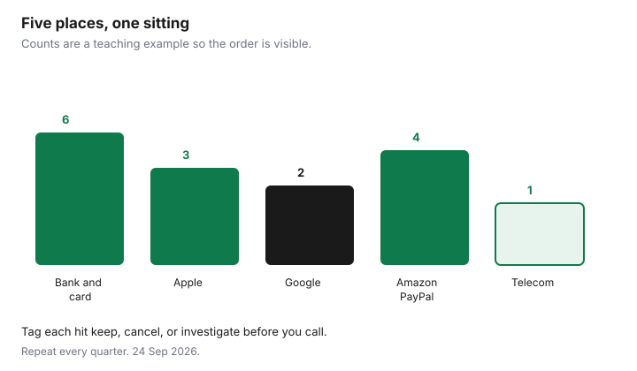

Subscriptions · Canada
How to Find Hidden Recurring Charges on Canadian Bank and Credit Card Statements
The $7.99 and $14.99 lines survive because they look like coffee. They are not coffee. They are the same merchant, most months, under a descriptor that is not the name on the app icon. A Canadian hunt has two layers: the deposit account and the credit card, then the wallets that charge through them. Apple, Google, Amazon, PayPal, and a telecom add-on can each hide a subscription that the statement only shows as a processor.
This is the investigation pass. Scoring what you keep is the audit. Stopping a trial before it bills is the trial checklist. A gym that keeps drafting after you meant to leave is the GoodLife cancel guide if that is the club, and the PAD rules below if the draft itself is the problem. An insurance premium is not a subscription to delete. Mid-term auto cancel math is the insurance guide.
Disclosure: Budget apps and trackers are offer types. Saving Optimizer may earn a commission if we later add a partner link. A spreadsheet is enough for this hunt. We do not currently claim a budgeting-app partnership. Education only. Not legal advice.
Key takeaways
- Export 90 days from every chequing account and credit card. Search the descriptors, not your memory of logos.
- Open Apple, Google Play, Amazon, PayPal, and the carrier add-on list even when the card “looks clean.”
- Tag every hit keep, cancel, or investigate before you phone anyone.
- A pre-authorized debit is cancelled with the biller in writing. Stopping the PAD does not cancel the contract or the amount you owe. Personal PAD problems have a 90-day reimbursement window at your bank.
- One master list, in CAD, with renewal dates. Repeat the pass every quarter.
Pull 90 days of transactions; filter for known merchant descriptors
Download CSV or PDF for 90 days from every account that can pay a bill: joint chequing, personal chequing, and each credit card, including a card that lives in a spouse’s name if it pays household apps. Ninety days catches monthly and weekly drafts and the trial that converted last month. It misses an annual charge from eleven months ago. If the bank allows a 12-month export, take it, and still do the 90-day filter first so the recent noise is visible.
Sort by description, then by amount. You are looking for repeats. Search these strings, then anything that appears twice: APPLE.COM/BILL, GOOGLE, AMZN, AMAZON, PAYPAL, NETFLIX, DISNEY, CRAVE, ADOBE, SPOTIFY, GOODLIFE, and the names of your telecom providers. Add the gym, the kids’ apps, and any meal-kit or grocery-pass name you remember. A line that says only a processor and a phone number is an investigate, not a skip. Write the amount in the dollars the statement shows. Do not convert from a US-dollar memory.
| What you see | Open this next | Why the card is not enough |
|---|---|---|
| APPLE.COM/BILL | Settings, your name, Subscriptions, on the Apple Account in the receipt | One line can bundle several apps. Apple’s list shows which ones. |
| GOOGLE * or a Play receipt | play.google.com subscriptions, correct Google Account | A second account on the phone is invisible in the first account’s list. |
| AMZN or Amazon channels | amazon.ca Memberships and Subscriptions, and Manage Prime | Prime, a video channel, and Subscribe & Save are different rows. |
| PAYPAL * | PayPal’s own subscription or automatic-payment list | The bank only sees PayPal. The merchant name is inside the wallet. |
| Nothing on the card | Rogers, Bell, Telus, Videotron, or other carrier add-ons | The charge is inside the monthly telecom bill. |
Check Apple, Google, Amazon, PayPal, and telecom add-on portals separately
After the export, open each portal even if you think you already know. Apple’s Canadian support page, published 14 Sep 2026, puts subscriptions under your name in Settings. If a family member’s Apple Account is on the receipt, only they see the cancel button. Google’s help page says to use the account that owns the subscription, and that uninstalling changes nothing. Amazon’s memberships page is where Prime and the extra channels live. A Prime Video channel can keep billing after you end Prime. Amazon says so on the end-membership help page used 24 Sep 2026.
PayPal is the wallet people forget because the bank line never says the merchant. Sign in, open automatic payments or subscriptions, and write every active agreement into the sheet with the CAD amount PayPal shows. Then open the carrier app and read add-ons one by one. A streaming credit, a device-protection plan, and a cloud-storage add-on are all subscriptions. They will not be on the Visa if they ride the mobility bill. Grocery passes belong on the list too. Whether PC Express is worth the fee is the delivery guide. Whether a meal kit’s trial price survives the promo is the meal-kit guide. Here you only need the renewal and the amount.

Tag each hit: keep / cancel / investigate
Every row gets one tag before you cancel in bulk. Keep means someone used it in the last 30 days and you accept the CAD amount. Cancel means the decision is made and you know the biller. Investigate means you do not know the merchant, you do not know who in the house started it, or the amount does not match the price you remember.
Investigate is a phone call or a portal search, not a shrug. Write the date you looked. If a teen’s game subscription is on your card, the tag is still yours to set: keep with a limit, or cancel and tell them. Silence renews it. Do not tag a charge “probably fraud” and also leave it. Either it is an agreed PAD you will cancel properly, or it is an unauthorized debit you will report. Those are different calls, and the next section is the agreed-PAD path.
Call unknown PAD merchants; stop PAD formally if needed
A pre-authorized debit is permission for a company to take money from your account on a schedule. The Financial Consumer Agency of Canada’s page on pre-authorized debits says you cancel by notifying the biller in writing and keeping a copy. The agreement should say how. Payments Canada’s consumer guide says the same, and that the biller must cancel within 30 days of notice. A sample form exists in Rule H1. You are not required to use that exact form. Written notice you can prove is the point: email with the agreement details, registered mail, or the method the agreement names. Note the date.
FCAC is explicit that cancelling the PAD does not cancel the contract and does not cancel the amount you owe. You are changing the payment method. A gym, an insurer, or a lender can still say you owe the instalments. Stopping the draft and walking away is how a membership ends up in collections. Cancel the membership first, in the way that contract allows, then stop the PAD if drafts continue past the end date. For a personal PAD that was not authorized, or that kept coming after you cancelled the agreement, FCAC says you have 90 days to seek reimbursement through your financial institution. Call the biller, then the bank, inside that window if the debit was wrong. A single payment you simply do not want this month is a stop-payment request to the bank, which may have a fee. Read the fee before you rely on it.
Unknown descriptors get a call to the number on the statement or a search of the exact string. Ask who the merchant is and for a copy of the agreement. If nobody in the house agreed, treat it as an unauthorized debit and follow the bank’s process inside the 90 days. If someone agreed and forgot, tag it cancel or keep, and do the written cancel if you are ending it.
Build a master subscription list with renewal dates and CAD amounts
The master list is the sheet you will open every quarter. One row per service. Required fields: name, user, biller (bank PAD, credit card, Apple, Google, Amazon, PayPal, or carrier), amount in CAD, tax included or extra, last charge date, next renewal, tag, and where the confirmation is saved. Annual rows matter more than monthly rows because they do not show up in every 90-day export. A $99 Prime renewal and an Adobe annual plan belong on the list even in a quiet month. Prime’s current fees are on the Prime guide. Adobe’s cancel fee is on the Adobe guide.
A budget app can hold this list if you already use one. A spreadsheet does the same job. The tool is not the audit. The renewal dates are. Put a calendar alert seven days before each annual date and each trial end, shared by the adults who pay.
Repeat every quarter—new trials appear constantly
New trials start from app updates, kids’ tablets, and “start free month” buttons on sites you already use. A single heroic Saturday does not stay true. Repeat the 90-day export every quarter. January, April, July, and October are easy to remember. The week after a card’s statement cycle is just as good if you tie it to a date you already see. Compare the export to the master list. Anything new is a row. Anything on the list that did not post, and should have, is a question: did the cancel work, or did the card change?
Update the tag when use changes. A keep from last quarter that nobody opened becomes a cancel. That is the same 30-day test as the audit. The quarterly hour is cheaper than a year of forgotten $14.99 charges. Four quiet quarters are a success. They are not a reason to skip the fifth.
Sources & date stamps
- Financial Consumer Agency of Canada, “Pre-authorized debits (PAD),” used 24 Sep 2026: cancel in writing and keep a copy; cancelling the PAD does not cancel the contract or the amount owed; 90 days to seek reimbursement from your financial institution if debits continue or were not approved.
- Payments Canada, consumer guide to pre-authorized debit, used 24 Sep 2026: follow the agreement’s cancel instructions; the biller must cancel within 30 days of notice; Rule H1 includes a sample form you are not required to use.
- Apple Support (CA), published 14 Sep 2026, and Google Play Help, used 24 Sep 2026: subscriptions are cancelled in the account list, not by deleting the app.
- Amazon.ca Help, end Prime membership, used 24 Sep 2026: other Prime Video subscriptions can remain after Prime ends.
Frequently asked questions
Is 90 days enough?
It is enough to see monthly charges and recent trials. Export 12 months as well if you can, and keep annual renewals on the master list so a once-a-year charge is not invisible between quarters.
The line says PayPal and nothing else. What now?
Sign in to PayPal and open automatic payments. The merchant name and the amount are there. The bank cannot show you that list.
Can I just tell my bank to block the company?
You can ask for a stop payment, and you can revoke a PAD in writing. FCAC says cancelling the PAD does not cancel what you owe. End the contract the way that contract requires, or you may still be billed or sent to collections.
How long do I have to dispute a PAD?
For a personal PAD that was not authorized or that continued after you cancelled the agreement, FCAC says 90 days from the withdrawal to seek reimbursement through your financial institution. Sooner is better. This is not a workaround for a debt you agreed to.
Do I need a paid budget app?
No. A spreadsheet with the columns on this page is the whole system. A tracker is optional if you will actually open it every quarter.